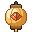

Save this login
FIND
AANG IS DRIVING
Keep this login in Bitwarden?
Unlock Bitwarden
Connect a keyboard?
Bookmark saved
Popup blocked
Block ads
Block popups
Dark mode
AI
Claude and Aang
Use my login
THIS SITE CAN USE
Camera
Microphone

CLAUDE WANTS TO
SITES
STEPS
UPDATE READY
This update has security fixes. Skipping it leaves known holes open until the next one.
Changed your mind? It installs now, the usual quick restart.
It stays on file. "Check for updates" in Samara's menu brings it back.
It won't be offered again.
UPDATED WHILE YOU SLEPT
DOWNLOADSDrag a file out to use it anywhere
STOPPED · FAKE SITE
This site is on a list of fake sites
Lists are sometimes wrong, so you can still go in, but it takes the held lever.
YOUR BANK
Open your bank in Chrome
PLAYING IN THE POP-OUT
NOT SECURE
This site isn't secure
THIS PAGE CRASHED
This page stopped working
The page broke, not your PC. Reload brings it back.